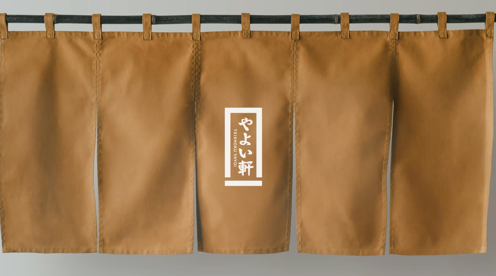
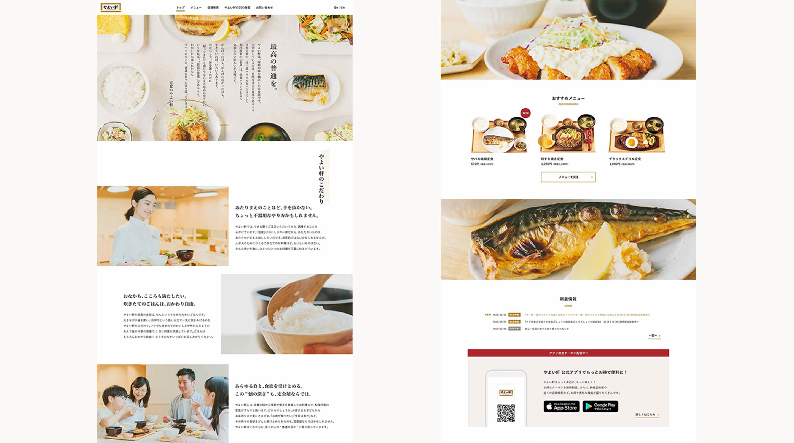

やよい軒
ロゴ刷新にあわせてブランドWebサイトもフルリニューアル。スマートフォンでも使いやすいUIを意識し、最適化を図りました。
やよい軒をさらに知ってもらうためのかるた風コンテンツ「やよい軒 10の秘密」もあわせて企画・作成し、ブランドの認知拡大を狙いました。
Cl : PLENUS Co.,Ltd. CD : Fujiwara Nao AD : Sano Mayumi D : Matsuoka Asuka C : Akaboshi Kaori WD : Tomita Taku Pr : Hosomi Yuta
2020